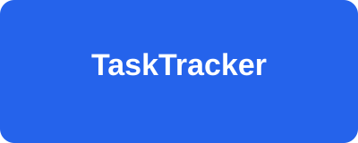

Завдання
Створюйте завдання з пріоритетом, дедлайном і виконавцем.
Трекер завдань для команди: плануйте, призначайте виконавців, відстежуйте статус

Створюйте завдання з пріоритетом, дедлайном і виконавцем.
Запрошуйте учасників і розподіляйте роботу між ними.
Відстежуйте шлях завдання від «До виконання» до «Виконано».
Дивіться, скільки завдань виконано і що прострочено.
| № | Завдання | Виконавець | Пріоритет | Статус | Дедлайн |
|---|---|---|---|---|---|
| 1 | Розробити макет головної сторінки | Діана О. | Високий | Виконано | 20.10.2026 |
| 2 | Зверстати головну сторінку | Середній | В роботі | 27.10.2026 | |
| 3 | Налаштувати базу даних | Максим Д. | Високий | На перевірці | 25.10.2026 |
| 4 | Написати документацію API | Софія Т. | Низький | До виконання | 05.11.2026 |
| Усього завдань: 4 | |||||
Клікніть на колонку дошки, щоб перейти до відповідного розділу.